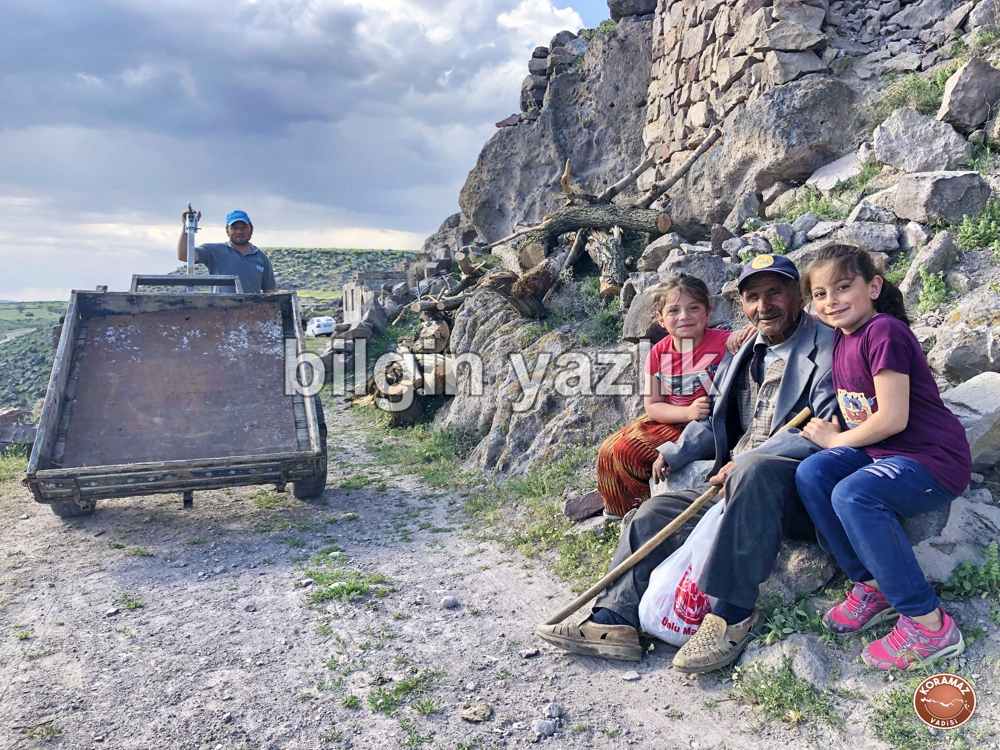
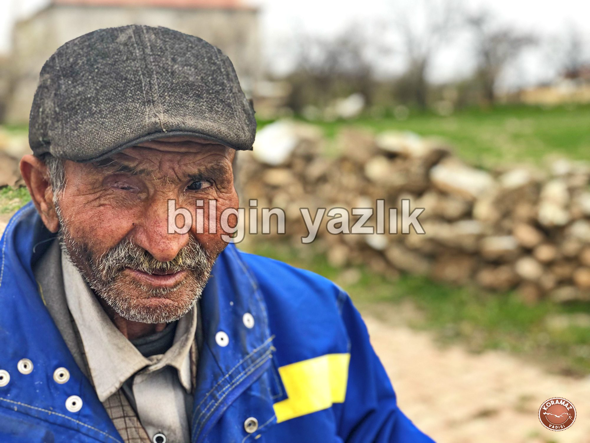

SON DİMİTRELİ HÜSEYİN EMMİ
Terk edilmiş köyün daracık sokaklarında dolaşırken, köy terk edilmeden önce sokaklarında koşturan çocukların sesleri kulağıma geliyordu. Şimdilerde damı dahi çökmüş olan benzerlerine göre heybetli yapının ise belki de köy kahvesi olduğunu, kulağımda çay kaşığının bardakla buluştuğu sesleri hayal ederek fark ediyordum ve içimde anlamsız bir hüzün ile dolaşıyordum bu terk edilmiş köyün, Turan’ın sokaklarında.
Evlerin içlerine bakıyordum, harap, darmadağın, bir zamanlar birilerinin sıcak yuvası olan bu soğuk yüzlü kaya evler bugün bir kenara atılmış, hayırsız torun miraslarıydı belki de. Sokaklarında yapılan düğünler, camisinde kılınan Cuma namazları, ölümün arkasından yakılan ağıtlar sanki kalan son taşların içine sığınmış ve kimse fark etmeden oracıkta saklanıyorlardı. Terk edilmiş bir köy görünce hep hüzünlenirim, terk edilen sadece evler değil, duygular, anılar ve yaşanmışlıklardır gibi gelir, terkedilenler birbirlerine sarılıp saklanırlar kimsesiz köyün dar sokaklarına, geriye kalan taşlara, kayalara.
Köy, Koramaz Vadisi’nin batıya bakan yamacına kurulmuş, vadinin platoya dönüştüğü kesişim noktasında üç ev büyüklüğünde devasa kayalar asılı duruyorlar, bu kayalar geçmişte defalarca aşağıya yuvarlanıp insanlara ve evlere zarar vermiş. Bu durum köylünün canına tak edince, 1968 yılında Valilik kararı ile köy bugünkü yerine yani platoya taşınmış. Kayalardan kaçmak yerine atalarımızın da binlerce yıl yaptığı gibi kayalar ile uyumlu bir yaşam geliştirilemez miydi sorusu hep aklımda kalacaktır.
1968 yılından itibaren gruplar halinde köy terk edilmeye başlanmış ve nihayet köy bir kişi hariç tamamen boşaltılmıştır. Evet, yanlış okumadınız, bir kişi hariç. Terk edilmiş Turan sokaklarında bir başıma yürürken, gözüme bir ev ilişiyor, pencereleri, kapısı sağlam, hala dimdik ayakta. Önünde 70’li yaşlarında, kasketli, ağır hareket eden bir adam görüyorum. Selam vermek ve tanışmak için yanına gidiyorum. Bana doğduğu günden yani 1948’den bugüne kadar önünde durduğu bu evde yaşadığını, 1968 yılında tüm ailesinin ve köylünün köyü terk edip gitmesine rağmen, hiçbir zaman gitmeyi düşünmediğini zar zor konuşarak anlatıyor. Hikâyesini merak ediyorum, gerek kendisinden gerekse köylüden hikâyesini öğreniyorum.
Adı Hüseyin Dönmez, köylü kendisine Hüseyin Emmi diye hitap ediyor. Kendi ifadesi ile Dimitre’de yaşayan son insan. Bugünkü adı ile Turan, eski adı ile Dimitre 1968 yılında platoya taşınmış olmasına rağmen Hüseyin Emmi Dimitre’yi hiç terk etmemiş, 20 yaşından itibaren 51 yıldır bir başına bir taş evde yaşıyor. Evde elektrik yok, su yok, soba ile ısınıyor, mumla aydınlanıyor. Kendisiyle birlikte dört erkek kardeşler, babası boyacı maaşı büyütmüş çocuklarını. Hüseyin Emmi’ye kardeşleri yardım ediyor, beslenme, ısınma gibi ihtiyaçlarını karşılıyorlar, hatta defalarca yukarı köye çağırmışlar ama Hüseyin Emmi oralı bile olmamış.
Her sabah gün doğumuyla uyanan Hüseyin Emmi, varsa mutfağındaki birkaç parça kuru ekmeği yiyip eline su bidonlarını alıp yeni köye doğru yola koyuluyor. Yol üzerinde zamanla artık adı Hüseyin Emmi Çeşmesi’ne dönüşmüş yıkık köyün eski çeşmesine uğruyor, sızıntı şeklinde akan suyun altına bidonu yerleştirip yeni köye doğru yürümeye devam ediyor. Yaşlandığı için çok ağır adımlarla ama durmadan yürüyen Hüseyin Emmi, daracık sokaklı yıkık köyün çivisi gibi sokaklarını çiviliyor adeta, köy bir yere kayıp gitmesin diye.
Gününü, köy kahvesinde köylü ile sohbet ederek geçiriyor genelde, her hafta Cuma günü köye posta geliyor, artık gelenek olmuş, postacı tüm postaları Hüseyin Emmi’ye emanet ediyor. Hüseyin Emmi, PTT logolu şapkasını takıyor ve ağır aksak adımlarla köyü arşınlamaya başlıyor. Tüm postalar Hüseyin Emmi’ye emanet, onları tek tek sahiplerine teslim ediyor. Hizmetinin karşılığında Hüseyin Emmi’nin bahşişi eksik olmuyor. Akşam oluyor, Hüseyin Emmi yorgun ama mutlu, emanetler sahiplerine teslim edildi. Topladığı bahşişlerle köy bakkalına uğruyor, öteberi alıyor, en önemlisi de sigarasını alıyor ve tekrar harap köyün daracık sokaklarına bırakıyor kendini, 1968’den bu güne bir başına yaşadığı köyünün yolunu tutuyor.
Yolda köylüyle selamlaşıyor, sohbet ediyor, çocuklar Hüseyin Emmilerinin etrafında pervane oluyorlar. Hüseyin Emmi, gücünün son damlasıyla çeşmesine iniyor, sabahtan bu yana ancak dolan bidonunu alıp evine gidiyor. Koramaz Vadisi’nin batıya bakan yamacına kurulmuş köyünün bacası tüten son evinin batıya bakan kapısının eşiğine oturuyor, güneşin batışını yaktığı keyif sigarası ile izlerken kim bilir aklından neler geçiriyor.


Bu yazı taliyol arşivinden taşınmıştır. · özgün kayıt